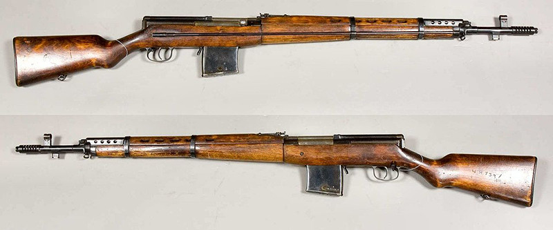
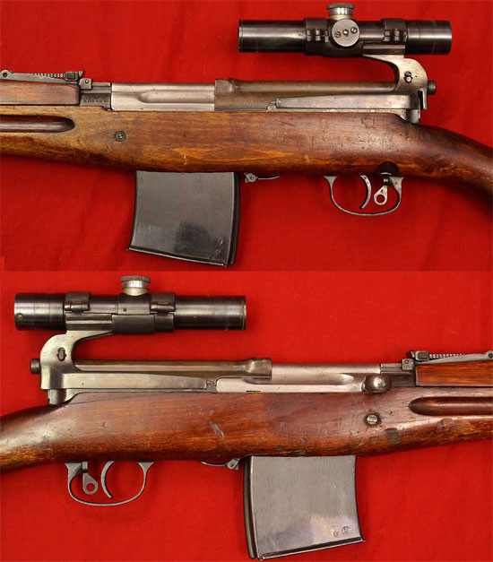
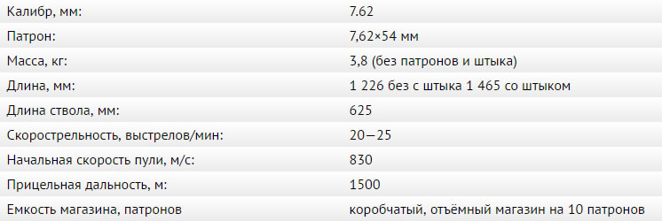

Снайперская самозарядная винтовка Токарева (СВТ - 40)
История
Самозарядная винтовка Токарева получила первое боевое применение во время советско-финской войны 1939-1940 гг. На основе опыта её боевого использования, а также войсковых и полигонных испытаний Комитет Обороны 13 апреля 1940 г. принял постановление о принятии на вооружение Советской Армии модернизированной винтовки Токарева под наименованием «7,62-мм самозарядная винтовка системы Токарева обр. 1940 г. (СВТ-40)». В июне 1940 года выпуск СВТ-38 был прекращён.
B процессе модернизации винтовки в неё были внесены некоторые конструктивные и технологические изменения, улучшающие её боевые и эксплуатационные качества. Однако ряд недостатков, требовавших для их устранения коренной переделки, не удалось ликвидировать. Такими недостатками являлись: неудобство газорегулировки, возможность утери отъёмного магазина, чувствительность к загрязнению, запылению, густой смазке, высокой и низкой температурам. Также предполагалось уменьшить вес и габариты винтовки, однако вскоре выяснилось, что простое уменьшение размеров приводило к сбою в работе автоматики, поэтому винтовке сохранили её размеры, лишь уменьшили длину штыка. Массу СВТ-40 удалось снизить за счёт более тонких деревянных деталей и значительного количества дополнительных отверстий в кожухе.
С 1 июля 1940 г. началось изготовление самозарядной винтовки Токарева обр. 1940 г. с одновременным свёртыванием производства магазинных винтовок обр. 1891/30 г. B июле было изготовлено 3416 шт., в августе — 8100, в сентябре — 10700 и за 18 дней октября — 11960 шт..
В 1940 г. была разработана и поступила на вооружение снайперская винтовка СВТ-40, тогда же было прекращено производство снайперских магазинных винтовок обр. 1891/30 гг.. Специально для СВТ был разработан оптический прицел ПУ обр. 1940 г. Снайперская самозарядная винтовка отличалась от основного образца лишь кронштейном с оптическим прицелом и более тщательной обработкой канала ствола. Она имела значительно большее рассеивание, чем снайперская винтовка обр. 1891/30 г., и все попытки улучшения кучности снайперских СВТ-40 показали, что без коренной переделки системы выполнить эту задачу невозможно. Поэтому в начале 1942 г. было восстановлено производство магазинных снайперских винтовок обр. 1891/30 г., а с 1 октября 1942 г. прекращён выпуск снайперских СВТ-40. За 1941 г. было изготовлено 34782 снайперских СВТ-40, за 1942 г. - 14210.
20 мая 1942 г. Государственный Комитет Обороны принял постановление о производстве автоматической винтовки Токарева обр. 1940 г. (АВТ-40), которая с июля начала поступать в действующую армию. АВТ-40 по своему устройству была аналогична СВТ-40, но благодаря наличию переводчика, роль которого выполнял предохранитель, могла вести как одиночный, так и непрерывный огонь. Автоматическая винтовка Токарева предназначалась для выполнения тех же задач, что и самозарядная винтовка, поэтому основным видом её огня был одиночный. Стрельба короткими очередями допускалась лишь при недостаточном количестве ручных пулемётов, а непрерывным огнём — в исключительных случаях в момент наибольшего напряжения боя. АВТ-40 позволяла частично компенсировать недостаток ручных пулемётов и пистолетов-пулемётов в начале войны, но это была временная мера, так как при создании винтовки Токарева к ней не предъявлялись требования по обеспечению интенсивного автоматического огня.
Изменение режима огня привело к понижению живучести деталей винтовки и увеличению количества задержек, в том числе таких серьёзных, как поперечный разрыв и неизвлечение стреляной гильзы, недозакрытие затвора и осечки. Причиной таких задержек являлась недостаточная жёсткость ствола и ствольной коробки и непригодность конструкции ударно-спускового механизма для автоматической стрельбы. По кучности боя автоматическая винтовка при стрельбе одиночным огнём уступала даже карабину обр. 1938 г., а при стрельбе короткими очередями и непрерывным огнём - пистолетам-пулемётам Шпагина обр. 1941 г. и Судaева обр. 1943 г. Кроме того, она сохраняла все недостатки, присущие самозарядной винтовке. B донесениях с фронтов Великой Отечественной войны отмечалось, что «как самозарядные (СВТ-40), так и автоматические (АВТ-40) винтовки используются в боевых условиях недостаточно, что войска объясняют сложностью конструкции, недостаточной надёжностью и меткостью самозарядных и автоматических винтовок». Ввиду отмеченных недостатков производство самозарядных винтовок системы Токарева начиная с 1942 г. резко сократилось. Если в 1941 г. было выпущено 1031861 винтовок, то в 1942 г. только 264148.
Работая над усовершенствованием своей системы, Токарев улучшил отдельные детали винтовки, однако избавиться от основных недостатков системы ему так и не удалось. 3 января 1945 г. последовало постановление Государственного Комитета Обороны СССР о снятии с производства СВТ-40 и АВТ-40 (всего на 2 недели раньше, чем аналогичное постановление по винтовкам обр. 1891/30 гг.). Однако приказа о снятии с вооружения СВТ-40 до сих пор нет.
Также Токарев вёл работы по созданию самозарядных карабинов. В январе 1940 г. на полигонных испытаниях были представлены самозарядный карабин, спроектированный Токаревым на основе СВТ-38, и карабин конструкции Симонова. Оба образца были признаны недоработанными. B сентябре 1940 г. Токарев на базе СВТ-40 разработал карабин с переводчиком для автоматической стрельбы (АКТ-40). В октябре 1940 года прошли повторные испытания карабинов Токарева и Симонова, оружие снова не выдержало предъявленных требований. Об эффективности автоматического огня из АКТ-40 может говорить тот факт, что в полигонных условиях рассеивание попаданий на дальности в 100 метров при стрельбе с упора составляло при одиночном огне порядка 9 см, а при автоматическом огне – от 70 (короткими очередями) до 100 см (длинными очередями) для серий по 20 выстрелов.
Автоматические карабины Токарева на вооружение Красной Армии официально не принимались, однако до начала Великой Отечественной войны в течение 1940-1941 гг. Тульским оружейным заводом № 314 было выпущено несколько сотен карабинов Токарева модели 1940 года. Эти карабины выпускались в самозарядном, автоматическом и снайперском вариантах (снайперские могли быть и самозарядными, и автоматическими). Карабины могли отличаться количеством отверстий в верхнем кожухе – 4 или 5, а в ствольной накладке могло быть 1 или 2 отверстия. Автоматические варианты имели вырез на правой стороне ложи для головки предохранителя переводчика (как у АВТ-40). В 1941 году была выпущена небольшая партия автоматических и самозарядных снайперских карабинов в подарочном исполнении. Известно, что в феврале 1941 года один был вручён первому секретарю Тульского Обкома ВКП(б) В.Г. Жаворонкову, другой – Маршалу СССР К.Е. Ворошилову.
После эвакуации завода № 314 в ноябре 1941 г. в город Медногорск самозарядные и автоматические карабины продолжались выпускаться небольшими партиями как минимум до 1943 года включительно. Карабины Токарева в некотором количестве присутствовали в войсках, самозарядный карабин был принят на вооружение Вермахта под индексом SiGewehr 259/2(r). Также во время войны из вышедших из строя винтовок СВТ-40 и АВТ-40 изготавливались суррогатные карабины.

Винтовки Токарева не имели большого успеха прежде всего из-за сложности, что создавало трудности как для в производстве, так и при эксплуатации в полевых условиях. Винтовка Токарева требовала надлежащего обращения, что в условиях массового призыва было невозможным, кроме того она не была лишена конструктивных недостатков, которые так и не были устранены до снятия её с производства. Однако в руках снайперов и морских пехотинцев винтовка показывала хорошие боевые качества. СВТ-40 была несколько легче, чем M1 Garand, но заметно уступала последней по надежности, а немецкая самозарядная винтовка G43(W) имела аналогичную СВТ систему отвода пороховых газов.
Конструкция
Винтовка работает по принципу отвода газов из канала ствола с коротким ходом газового поршня. Запирание осуществляется перекосом затвора в вертикальной плоскости. Ложа составная. Ударно-спусковой механизм — курковый. Предохранитель блокирует спусковой крючок. Магазин коробчатый, двухрядный, отъёмный, на 10 патронов. Предусмотрена возможность снаряжать магазин, не отделяя его от винтовки, из двух штатных обойм к винтовке Мосина. Прицельные приспособления открытые, состоят из мушки с намушником и целика, регулируемого по дальности. СВТ снабжена газовым регулятором, позволяющим изменять количество газов, отводимых из канала ствола. Имеется дульный тормоз. У СВТ-40 позднего выпуска дульное устройство аналогично АВТ-40. Винтовка комплектовалась клинковым штык-ножом, носимым в ножнах на поясе и примыкаемым к винтовке только в случае необходимости.

При стрельбе в положении лёжа винтовку рекомендуется поддерживать на ладони левой руки впереди магазина, а при стрельбе в положении с колена, сидя и стоя удерживать левой рукой за магазин. Хорошо натренированный стрелок при заранее наполненных патронами магазинах может произвести до 25 выстрелов в минуту, а при снаряжении магазина при помощи обойм – до 20 выстрелов в минуту.
Прибор для бесшумной стрельбы
В апреле 1941 года проходил полигонные испытания «Глушитель звука выстрела к СВТ-40». Он был спроектирован для стрельбы обычными винтовочными патронами со сверхзвуковой скоростью пули, а не под специальные патроны с уменьшенной скоростью пули, как винтовочный «Брамит». Глушитель практически не изменял начальную скорость пули и кучность боя, но и почти не влиял на погашение звука и вспышки при выстреле. Кроме того пороховые газы после выстрела не полностью выходят через ствол, а задерживаемые глушителем, частично выходят назад и в момент открытия затвора могут ударить стрелка по лицу (такой эффект наблюдается и в современном оружии при стрельбе очередями с ПБС). В ходе испытаний глушитель был серьёзно повреждён, и его не стали дорабатывать.
Сегодня подобные глушители называют «тактическими», они применяются спецподразделениями на снайперских и штурмовых винтовках, и даже пулемётах. В качестве примера можно привести винтовку СВУ.
Технические характеристики
